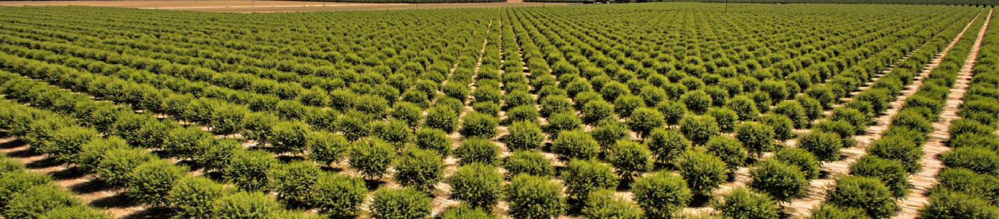

Cover crops, minimal tillage, the usual incremental fixes — none of them rebuild organic matter fast enough under intensive planting. We help farmers rebuild it properly, using the 85% of the harvest that's never eaten, processed into Soil Booster and returned to the same land it came from. At a scale small operators can't touch.

By-product processed into Soil Booster at high volume — the loop closed at a scale small operators can't touch.
See the process →Specialised equipment applies Soil Booster precisely across the orchard, feeding usage data straight into soil reporting.
See the process →Ongoing soil health reporting, built on application data — tracking organic matter and impact over time.
See the process →Soil Booster, application, and reporting all run on Edaflow — our data platform for composting operations, licensable across the basin.
Visit Edaflow ↗Portugal alone produces over a million tons of olive pomace a year. Most goes to low-value combustion. By 2028, extractor capacity will be outstripped by 600,000 tons of surplus.
Edafos is built to absorb that surplus, and the equivalent surplus from almonds, grapes, and citrus, across the Mediterranean.
How shifting subsidy structures change the economics of by-product reuse.
A walk-through of the composting process, feedstock to finished product.
What the Évora site means for phase one of the roll-out.